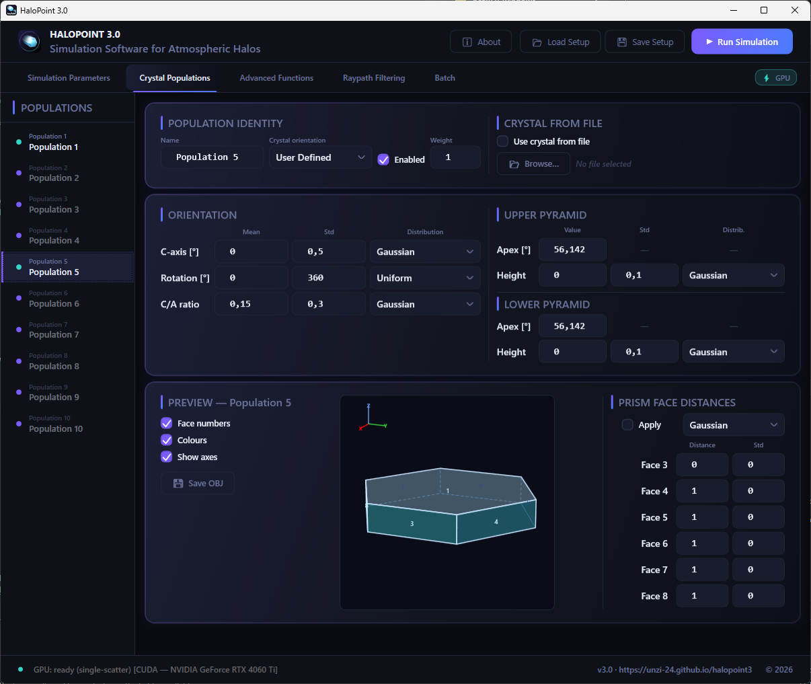
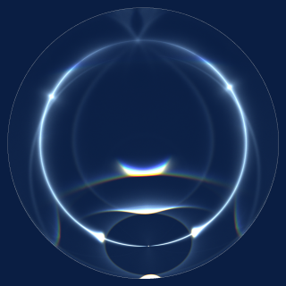
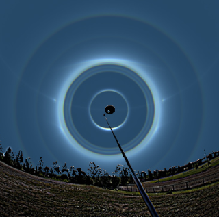
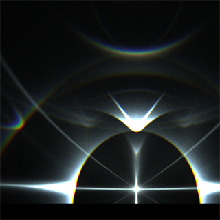

GPU accelerated software for simulating atmospheric ice crystal halos.
Last updated: checking…

HaloPoint 3.0 is a simulation tool for ice crystal halos — a fascinating family of atmospheric optical phenomena. Dozens of distinct halo forms are known because the various shapes and orientations of tiny hexagonal ice prisms allow light to take numerous different paths in an encounter with a crystal, ranging from simple refraction paths through a wedge to complex ray paths involving several internal reflections. HaloPoint 3.0 traces these paths for both convex and non-convex ice crystals, projecting the resulting halos onto the celestial sphere.
The interface is designed to be intuitive, giving you control over simulation parameters so you can closely match a real halo photograph. For deeper investigation, the built-in analysis feature lets you inspect the ray paths responsible for any given halo in detail. See the Features section to learn more, or jump straight to the User Manual.
Optimized algorithms and GPU acceleration enable the software to trace millions of light rays through ice crystals per second. HaloPoint 3.0 also supports simulation of multiple-scattering halo phenomena.
HaloPoint 3.0 handles standard hexagonal ice crystals as well as arbitrary non-convex shapes defined by the user, in both single- and multiple-scattering simulations. Crystal dimensions are sampled from probability distributions according to the users instructions.
With HaloPoint 3.0 it is possible to visualize the ice crystal orientations and shapes and draw an image of the light path through the crystal for each point in the simulation.
A rich set of ray path filtering tools lets you isolate and closely examine specific halo forms within a simulation. Each dot in the simulation image can be traced back to its exact ray path through the crystal.
Every variable governing crystal dimensions, shape, and orientation can be set to vary according to a selected distribution, with a user-defined interval or standard deviation. All interface settings and parameter values can be saved and reloaded at any time.
Simulations can be run using the full colour spectrum, a selection of specific wavelengths, or in black and white. The number of shade levels for halo point output is configurable up to 1 million.
Match the simulation's perspective to a real photograph by specifying the lens focal length, camera sensor size, and the image center point in the sky. For precise alignment, a custom projection can be defined using user-supplied coefficients for a radial mapping function.
With HaloPoint 3.0 series of simulations can be run. Just queue up a series of simulation runs and let the software work through them unattended.

Blue circle is a beautiful feature that can usually be seen as blue spots on a parhelic circle. Click here and find out more!

A display where eight concentric halo rings can be seen in a single photograph. Usually the 22-24° area is one diffuse ring of light, but in this display the halos can be separated from each other. Is that repeatable in simulation?

An impressive diamond dust display contained rare and possibly novel multiple scattering halos. See the full analysis.
Get the software package and user manual.
HaloPoint 3.0 is a free software, and intended for personal use. You may not redistribute or sell this software in websites or by any other means. HaloPoint 3.0 is available for download in the hope that it will be useful, but it comes without any warranty. Extensive testing and validating measures have been taken to ensure correctness of the simulations, but since the code has been written as a hobby and not by a professional software developer, there may lurk some yet unidentified errors within the software. Users are encouraged to report all software faults and exceptions to the following email address (replace w with a dot): halopointw3 at outlookwcom. Please, acknowledge the use of HaloPoint 3.0 in publications and websites and use the following reference in your publications: HaloPoint 3.0 -- https://unzi-24.github.io/halopoint3/
A few recommendations for those who want to explore halos further. Walter Tape’s Atmospheric Halos (American Geophysical Union, 1994) and its succes- sor, Atmospheric Halos and the Search for Angle X by Tape and Jarmo Moilanen (American Geophysical Union, 2006), are excellent treatments of the subject. Finnish readers also have Marko Riikonen’s fine Halot: Jääkidepilvien valoilmiöt (Ursa, 2011). Finally, Skywarden observation service maintained by Ursa Astronomical Association at Taivaanvahti - Skywarden collects sightings and photographs from observers — a good place to see what these simulations are really trying to reproduce.